Chapter 1 — The Review
The applause was real. That was the part Maya Reyes kept replaying afterward — actual applause, in the Thursday sprint demo, three weeks into her first Spring job.
The ticket had been ATR-4112: monthly disclosure digest for program admins — one page per month per program: new reports, status changes, public disclosures, a severity rollup. Maya had built it the way she'd built forty features in eight years of frameworkless Java at Meridian Freight: read the schema, write the service, wire the endpoint, ship. Four days, soup to nuts. When she paged through a live digest for the Stonethrow program — Glasshouse's own bug-bounty program, run against itself, because people who live in glass houses should invite the stones — Lena Park said, "Northbeam has been asking for this since October," and somebody actually clapped.
Friday morning there was a printed diff on her desk.
Printed. On paper. Forty-some pages of her own code, annotated in green ink in a small, patient hand. She counted the comments while her coffee went cold: forty-seven. The handwriting belonged to Elias Brandt, principal architect, employee #4, a man she had so far exchanged eleven words with.
Comment #1 sat beside a line that worked. It had run in the demo, in front of everyone, flawlessly:
@GetMapping("/api/programs/{id}/digest")
public List<Report> digest(@PathVariable Long id, @RequestParam String month) {
return digestService.getDigest(id, month); // JPA entities, straight onto the wire
}
⏸ Your call. The demo applauded this exact line. Before you read the green ink: what breaks here, when does it break, and which -ility is about to fail? Commit to an answer — guess from the code if Spring is new to you; own it cold if it isn't.
The green ink said:
Works is not done. What happens when this entity meets Jackson after the session closes?
Maya read it three times. At Meridian this was safe — an object held whatever I'd copied out of the ResultSet, nothing more; data never reached back to the database on its own. What session? What closes? Her instinct said the comment was pedantry. Her instinct, she would learn by lunch, was the trap.
(If you committed an answer at the pause: the mechanism is lazy proxies meeting serialization after the persistence context ends — but the -ility is the deeper cut, and it isn't performance. Hold that thought; Elias gets to it at the Wall.)
The investigation
She read all forty-seven before going to find him. It felt important, like reading the stack trace before asking for help.
They sorted into species. There were naming comments. Her 612-line ReportDigestService had methods called process, handleEntries, and getData2, and beside getData2 the ink said only: Names are the first documentation. This one documents despair. Beside a 130-line method: If you have to scroll, it's three methods wearing one name. There was comment #23, beside a helper that caught an exception, logged it, and returned null: A caught exception is a decision — we'll come back to that one. And in this codebase, absence is an Optional or a thrown exception, never null — and Optional is a return type, not a field. Comment #47 sat beside nothing at all, because there was nothing there: Tests?
There was a long bracket around the service's field declarations:
@Service
public class ReportDigestService { // 612 lines: SQL to HTML, all of human experience
@Autowired private ReportRepository reportRepository;
@Autowired private ProgramRepository programRepository;
@Autowired private ResearcherRepository researcherRepository;
@Autowired private ActivityRepository activityRepository;
@Autowired private JavaMailSender mailSender; // unused; "for later"
public List<Report> getDigest(Long programId, String month) {
// ...580 lines of querying, severity math, date juggling, HTML assembly...
}
}
The bracket's annotation: Five dependencies, one of them unused, none of them visible from outside. How would you construct this class? Try it. Literally try.
Then comment #1 again. Elias had circled the return type — List<Report>, raw JPA entities — and dated it, like a surveyor marking a sinkhole: This pattern pages someone at 2 a.m. Not necessarily you. Not necessarily here. But it's in the codebase now, and code is copied more often than it's read. — E.B., Jan 16.
He found her first, two coffees in hand, and pulled a chair to her desk.
"The digest is good," he said first, and meant it. "The reporting-window math is correct, including the month-boundary case everyone gets wrong. The severity rollup matches what triage actually needs. You shipped in four days something we've deferred for two quarters." He set down her coffee. "Now let me show you the difference between code that runs and code that survives."
"Forty-seven comments," Maya said.
"Forty-seven questions," Elias said. "Some I'm asking the code. Some I'm asking you. Walk with me."
What the senior sees
The Wall was a floor-to-ceiling whiteboard by the kitchen with a sun-bleached DO NOT ERASE note taped to its frame, dated 2019. Elias uncapped a marker.
"Eight years of hand-wired Java at Meridian," he said. "So you've paid for dependency injection by hand. Tell me what the container is for."
"Doing my old job," Maya said. "At Meridian I wired the graph myself — a two-hundred-line main(), repositories before services before handlers, in dependency order. The container builds that graph so I don't new everything by hand and ripple every constructor change through forty call sites."
"Good — inversion of control: the container does the wiring you used to do by hand. That's the half you brought with you. Here's the half you didn't. Component scan finds your classes; the ApplicationContext constructs them, wires them, decides their lifetime — and, this matters later, reserves the right to hand back something wrapped. Transactions, security, caching all arrive through that wrapping. Every new on a service class opts that object out of all of it. Your main() handed back exactly what it constructed, nothing more. This container is something you inhabit."
So the ApplicationContext is my Meridian main(), generalized — and it writes its own wiring. "Fine," she said. "But then why pick on my @Autowired fields? Field injection is less ceremony. The container's doing the wiring either way."
Elias capped the marker. "Show me the mechanism."
"The… annotation injects the field."
"That's the claim wearing a trench coat. How? When, in the object's life? By whom? What state is the object in beforehand?"
She opened her mouth and closed it. She didn't have it.
"Then here's the mechanism — it changes the verdict. Spring instantiates your class through its constructor — the no-arg one, since you declared nothing. At that instant your object exists, with five null fields. Then a piece of container machinery — AutowiredAnnotationBeanPostProcessor, if you want its name — writes your private fields by reflection: after construction, from outside, an assembly step only the container can perform. Constructor injection inverts that. Dependencies are parameters, and the fields can be final — set once, safely visible to every thread, no setter anyone can abuse — so the object is born complete or not born at all."
Maya sat with that. The object existed first; the fields were written afterward, by reflection, from outside.
"And the trade-off?" she said, because forty-seven comments had taught her there was always one.
"Honesty hurts. A constructor with five parameters is ugly — on purpose. The ugliness is the Single Responsibility Principle telling you the class does too much. Your ReportDigestService queries, aggregates, renders, and apparently almost sends email. Field injection let it sit at 612 lines, because a sixth dependency would have cost one invisible line. That's the smell. Not the annotation — the anesthesia."
He tapped the printed diff, comment #1. "Now the circle I dated. Mechanism again. Your controller returns Report entities, and Jackson serializes by walking their getters — at response-writing time, after your service has returned. Report.activity is a collection, and JPA loads to-many associations lazily by default; whoever mapped Report.researcher marked it lazy too, correctly, because to-one associations default to eager, which is its own trap. Lazy means Hibernate handed you proxies: placeholder objects that fetch their data only when a getter is called, and only while their session is still open. Your raw JDBC never produced one of those — a row copied out of a ResultSet was complete the moment you held it. Here, every lazy association is an IOU against an open session, and the session is a thing that closes."
And there it was. The proxies needed an open session to load anything, and serialization ran after her service had already returned. Her Meridian instinct — a getter is a getter, calling one costs nothing — hadn't been a shortcut this time; it had been the landmine. "But it worked in the demo."
"It worked," Elias said, "because Atrium runs with open-session-in-view switched on — a convenience. It keeps the database session open all the way through rendering, so lazy loads during serialization still succeed. It papers over the boundary instead of designing it."
"And the failure mode?"
"The day someone copies your controller's style into code that isn't a web request — a scheduled job, say — there's no view to hold the session open, and they meet LazyInitializationException at whatever hour scheduled jobs run. Which is why I dated it. Entities are your schema with behavior attached. The API boundary is a contract. Couple them, and every schema change becomes a breaking API change, and every serialization walks a graph you never meant to publish. DTOs at the edge. Records, ideally — immutable, honest, six lines."
On the way back he gestured at her source tree: controllers/, services/, repositories/. "One more. You packaged by layer, like the oldest parts of Atrium; the newer parts package by feature — everything about digest lives in digest. Mechanism: package-private is the only access boundary the language gives you for free, short of full modules, and it only works when collaborators share a package. Package-by-layer forces every class public and scatters one feature across three directories. Package-by-feature gives a change one address — and lets your assembler stay invisible to the rest of the monolith. Layers tell me what code is. Features tell me what it's for."
He was right about the directories. The digest lived at three addresses, every class public because the layout left no other option.
The architecture under the review
Maya looked at the source tree a long moment. "You're not actually reviewing my code, are you. You're reviewing the system my code teaches people to build."
Elias uncapped the marker again, visibly pleased. "Say more."
"Forty-seven comments, and underneath them there are — what, three rules? Dependencies point inward and arrive through constructors. The boundary speaks contracts, never schema. A feature lives at one address with its internals hidden." She took the marker and drew it before she could doubt herself:

"Three rules," Elias agreed, "and one direction. What you've drawn has older names than Spring — people say hexagonal, ports and adapters, clean architecture; the differences matter less than the invariant they share: source-code dependencies point toward the domain, and the domain knows nothing about the web or the database. Your DigestService depends on a repository interface — a port. JPA is an adapter behind it; the controller is an adapter in front of it. We don't add ceremony — no ports/ and adapters/ folders, no four-layer structure for a CRUD feature; that's how cathedrals get built over bus stops. But the dependency rule itself is non-negotiable, because of which -ility it protects. Name it."
"Evolvability," Maya said slowly. "Schema can change without breaking the API. Persistence can change without touching the digest math. Each feature package is… a wall we could someday cut along."
"And that," Elias said, "is the only honest definition of a modular monolith: one deployable whose internal borders are real enough to cut. Every boundary you respect in January is an option you still own in November. Every boundary you blur is an option you've sold — usually without noticing the sale, which is why we write the sale down." He tapped the repo's thin docs/adr/ folder on her screen. "Architecture Decision Record. Context, decision, consequences — half a page. Comment forty-eight: your rewrite ships with ADR-001."
At Meridian we had wiki pages nobody read, Maya thought. A dated half-page next to the code is just a commit message that survived. It was the first time all day something had felt easier than home.
The fix
The rewrite session started with a test, because Elias insisted the test come first — not for piety, for proof.
"Unit test for your digest service," he said. "Plain JUnit. No Spring."
Maya typed var service = new ReportDigestService(); and stopped. There was nothing to pass. The dependencies were private fields only reflection could reach. She could boot a whole container to test date arithmetic, or inject mocks by reflection hackery. Eight years of Java and I cannot construct my own class. "Okay," she said. "I can't. The class can't exist outside the container. Constructor injection wins on mechanism, not taste."
"Write that sentence down," Elias said. "It generalizes."
The rewrite took two days — the best two of her month. The god service split along its responsibilities: a DigestService that orchestrated, a DigestAssembler that aggregated, the HTML rendering deleted entirely because the frontend wanted JSON. Dependencies arrived through constructors and landed in final fields. The service declared what it needed and stayed ignorant of how those needs were built. That was Dependency Inversion made physical. The null-returning helper became two honest signatures: an Optional where absence was an answer, a thrown exception where absence was a bug. The string-typed month became a YearMonth. And the digest entries — which she'd been modeling as one bloated class with a type string and a switch — became a closed set the compiler could police:
public sealed interface DigestEntry
permits DigestEntry.Submitted, DigestEntry.StatusChanged, DigestEntry.Disclosed {
record Submitted(String reportRef, String title, Severity severity, Instant at)
implements DigestEntry {}
record StatusChanged(String reportRef, ReportStatus from, ReportStatus to, Instant at)
implements DigestEntry {}
record Disclosed(String reportRef, String title, Instant at)
implements DigestEntry {}
}
Sealed plus records made the digest's vocabulary finite, immutable, and pattern-matchable. Add a fourth entry kind, and every exhaustive switch failed to compile until someone handled it. It was the discriminated union she'd been faking with enums since 2019. The boundary got its own record, ProgramDigest, owing nothing to JPA. And the service shrank to something that read like the feature description:
@Service
public class DigestService {
private final ReportRepository reports;
private final DigestAssembler assembler;
public DigestService(ReportRepository reports, DigestAssembler assembler) {
this.reports = reports; // final: born complete, testable with plain new
this.assembler = assembler;
}
public ProgramDigest monthlyDigest(long programId, YearMonth month) {
var activity = reports.findActivityFor(
programId, month.atDay(1), month.atEndOfMonth());
return assembler.assemble(programId, month, activity);
}
}
The controller shrank further — one route, one record out, no entity anywhere near the wire:
@RestController
@RequestMapping("/api/programs/{programId}/digest")
class DigestController {
private final DigestService digest;
DigestController(DigestService digest) {
this.digest = digest;
}
@GetMapping
ProgramDigest monthly(@PathVariable long programId, @RequestParam YearMonth month) {
return digest.monthlyDigest(programId, month);
}
}
The tests were almost insultingly easy now. new DigestService(stubRepo, new DigestAssembler()) — no container, milliseconds. The whole feature lived in one package, atrium.digest, with the assembler package-private. And one more file rode along in the PR, half a page, dated:
# docs/adr/0001-feature-seams-in-the-atrium-monolith.md
* Status: accepted * Date: 2026-01-20 * Deciders: E. Brandt, M. Reyes
## Context
Atrium is a seven-year-old monolith with layer-packaged sediment; new work
keeps coupling API contracts to JPA schema and scattering features across
directories.
## Decision
New features package by feature with package-private internals; dependencies
arrive by constructor into `final` fields; the API boundary speaks records,
never entities; the domain depends on ports, not adapters.
## Consequences
Each feature is independently testable without the container and forms a seam
we could later extract along (or deliberately never extract — the option is
the point). Costs accepted: more types at the boundary, mapping code, and
arguments with the parts of the codebase that predate the rule.
The PR merged Tuesday with one green comment on the printed copy: Done. Not just working.
Elias stopped by as she closed the ticket and set something on her monitor stand: a dented yellow rubber canary, paint worn off one wing.
"What's this?"
"House rule. Whoever owns the gnarliest open bug keeps the Canary, and you must explain your problem to it — out loud, in full sentences — before you're allowed to escalate to a human. You'll want this. Everyone does eventually." He left an index card beside it, green ink: Claim → Mechanism → Trade-off → Failure mode. "Every answer you give me from now on, in those four beats. And Maya — that god service has at least three more services hiding in it. Keep going. Split it." He nodded toward the kitchen. "The Wall's open to you. Standing invitation."
⚖ Your move, architect — the seams fork
Elias's parting assignment — "that god service has at least three more services hiding in it; keep going" — left a real fork, because the digest wasn't the only reporting code in Atrium. Before reading on, commit: how should Maya structure the rest of the reporting work?
- A — Extract classes, keep the layer packages. Minimal churn; the team's muscle memory;
services/just gets four classes where it had one. - B — Package-by-feature with enforced seams. Reporting becomes
atrium.reporting.*feature packages, internals package-private, the boundary rules from ADR-001 — and (next chapter) a build-time check that fails CI when someone violates the dependency direction. - C — Extract a reporting microservice now. The digest is read-only and bursty; a separate deployable could scale and fail independently, and the seam is freshest today.
The trade-offs, since you've committed: A spends almost nothing and buys almost nothing — it preserves every-class-public coupling, so the evolvability it protects is the codebase's freedom to keep tangling; in six months the four classes have re-fused. B is what Maya chose: it taxes the team a naming argument and some mapping code, and pays out a monolith whose borders are real — cuttable later, testable now, cheap to operate tonight (one deployable, one pager). C buys independent scaling nobody asked for — the digest serves dozens of admins monthly — at the price of a network boundary's full failure menu: partial failure, latency, versioned contracts, distributed debugging, a second pipeline. The architect's tell isn't knowing C's costs; it's noticing that B keeps C purchasable later while costing a tenth as much today. (When the real split argument arrives in Chapter 14, it will be fought along seams that ADR-001 started cutting in January. And when someone finally does violate these seams — they will — it won't be malice; it'll be a Tuesday. That's Chapter 2's problem.)
She pinned the index card to her monitor, between the canary and the cold coffee, and realized — late, the way you notice a magician's second hand — that his entire review of her @Autowired fields had run in exactly those four beats. Humbled, she admitted to herself, and hooked. She had no way of knowing that the decomposition he'd just blessed would take staging down at 6:50 on a late-January morning — or that the stack trace would be the politest thing to happen to her all quarter.
The debrief — Ch.1, The Review
Why is field injection a smell — and what does constructor injection actually buy you? Claim: Constructor injection into
finalfields is the only injection style that should survive review. Mechanism: Spring resolves constructor arguments at instantiation, so the bean is born complete; field injection instead constructs the object empty and has container machinery (AutowiredAnnotationBeanPostProcessor) write private fields by reflection afterward — so only the container can assemble the class. Trade-off: Constructors expose the true dependency count — a five-argument constructor is ugly on purpose, an SRP alarm that field injection silences — at the cost of a few honest lines of boilerplate. Failure mode: A field-injected class can't be constructed in a plain unit test (fields stay null →NullPointerException), can't make its dependenciesfinal, and hides creeping coupling until the class is a 612-line god service nobody can instantiate outside production.
THE ARCHITECT'S LENS
- -ilities at stake: Evolvability (the chapter's true subject — DTO boundaries keep schema changes from becoming API breaks; feature seams keep extraction purchasable) and testability as its leading indicator: code you can't construct in a unit test is architecture you can't change cheaply. OSIV trades a hidden operability debt (sessions held across rendering) for developer convenience — the framework papering over a boundary the architect should design. The architect's question, every time: which -ility does this convenience spend, and did anyone approve the purchase?
- The ADR: ADR-001 — feature seams in the monolith: package-by-feature, constructor injection into
finalfields, records at the boundary, domain depends on ports. Half a page, dated, next to the code. - Rejected alternatives: field injection + entities-on-the-wire + layer packaging (the path of least ceremony — it optimizes for the first four days and taxes every day after); a ceremonial hexagonal layout with
ports//adapters/liturgy everywhere (the invariant matters, the folder religion doesn't); extracting a reporting service now (buys unneeded scaling with a distributed system's full failure menu — and B keeps it purchasable). - Fight or lean: Lean on the container — it's the wrapping (transactions, security, caching) that makes Spring worth inhabiting. Fight OSIV — it's the framework deciding your transaction boundary for you. Knowing which is which, per feature, is the job.
Story anchors
- The printed diff with 47 green comments, #1 on a line that worked → "works is not done": senior code is judged by how it survives, not whether it runs.
- The unit test Maya couldn't write (
new ReportDigestService()with nothing to pass) → field injection's mechanism — reflection after birth — and why constructor injection wins on testability, not taste. - The circled, dated return type
List<Report>→ entities at the API boundary meet Jackson after the session closes; DTO records decouple contract from schema (the landmine detonates in Chapter 7). - Maya's marker drawing on the Wall — three rules, one direction → the dependency rule; a modular monolith is a monolith whose borders are real enough to cut.
Interview ammo
- Kill-shot — Why does Spring exist; what does IoC buy you over
new? The container owns construction order, lifetime, and wiring of the whole object graph, and gets the chance to decorate beans on the way out (transactions, security, caching) — everynewopts that object out of all of it. - Follow-up — Why DTOs instead of entities from controllers? Jackson walks getters at response-writing time, after your transaction has returned, so lazy associations either explode (
LazyInitializationException) or drag your whole schema onto the wire — records at the boundary make the API a deliberate contract. - Follow-up — When is field injection acceptable? Essentially never in production code — the senior answer names the costs (untestable without the container, non-final state, hidden dependency count) and concedes only test classes, where the container already runs.
- Architect follow-up — Where does hexagonal architecture earn its cost in a Spring monolith, and where doesn't it? The dependency rule (domain depends on ports; web and persistence are adapters) earns its cost wherever the domain logic outlives its delivery mechanism — and the folder ceremony doesn't: enforce the direction, skip the liturgy, and write the decision down so the next feature doesn't re-litigate it.
Pointers → Playbook Ch.1 · examples/ch01_core/ (ContainerAndInjection.java, SelfInvocationTrap.java foreshadows Ch.3)